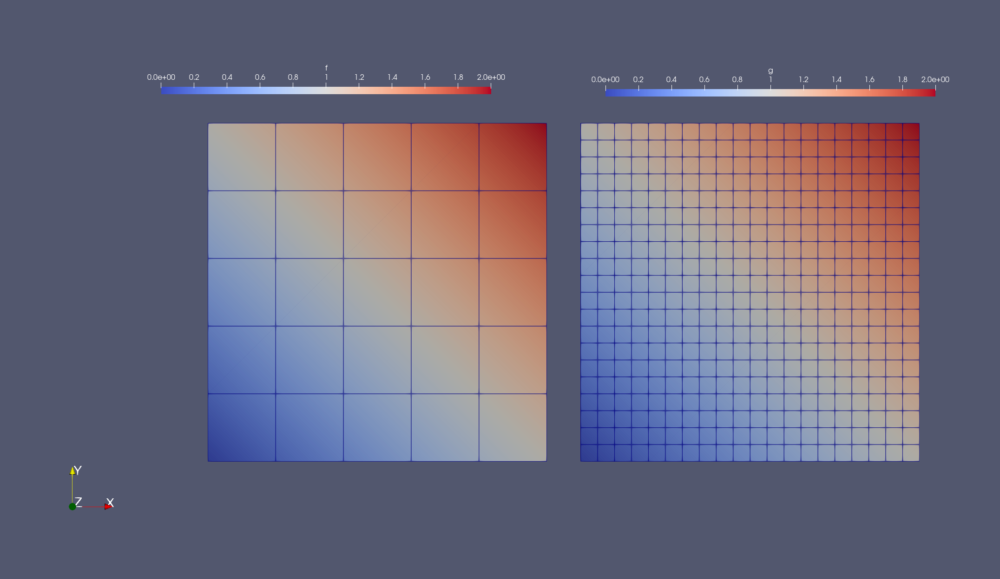

Tutorial 15: Interpolation of CellFields


In this tutorial, we will look at how to
- Evaluate
CellFieldsat arbitrary points - Interpolate finite element functions defined on different
triangulations. We will consider examples for
- Lagrangian finite element spaces
- Raviart Thomas finite element spaces
- Vector-Valued Spaces
- Multifield finite element spaces
Problem Statement
Let $\mathcal{T}_1$ and $\mathcal{T}_2$ be two triangulations of a domain $\Omega$. Let $V_i$ be the finite element space defined on the triangulation $\mathcal{T}_i$ for $i=1,2$. Let $f_h \in V_1$. The interpolation problem is to find $g_h \in V_2$ such that
\[dof_k^{V_2}(g_h) = dof_k^{V_2}(f_h),\quad \forall k \in \{1,\dots,N_{dof}^{V_2}\}\]
Setup
For the purpose of this tutorial we require Test, Gridap along with the following submodules of Gridap
using Test
using Gridap
using Gridap.CellData
using Gridap.VisualizationWe now create a computational domain on the unit square $[0,1]^2$ consisting of 5 cells per direction
domain = (0,1,0,1)
partition = (5,5)
𝒯₁ = CartesianDiscreteModel(domain, partition)Background
Gridap offers the feature to evaluate functions at arbitrary points in the domain. This will be shown in the next section. Interpolation then takes advantage of this feature to obtain the FEFunction in the new space from the old one by evaluating the appropriate degrees of freedom. Interpolation works using the composite type Interpolable to tell Gridap that the argument can be interpolated between triangulations.
Interpolating between Lagrangian FE Spaces
Let us define the infinite dimensional function
f(x) = x[1] + x[2]This function will be interpolated to the source FESpace $V_1$. The space can be built using
reffe₁ = ReferenceFE(lagrangian, Float64, 1)
V₁ = FESpace(𝒯₁, reffe₁)Finally to build the function $f_h$, we do
fₕ = interpolate_everywhere(f,V₁)To construct arbitrary points in the domain, we use Random package:
using Random
pt = Point(rand(2))
pts = [Point(rand(2)) for i in 1:3]The finite element function $f_h$ can be evaluated at arbitrary points (or array of points) by
fₕ(pt), fₕ.(pts)We can also check our results using
@test fₕ(pt) ≈ f(pt)
@test fₕ.(pts) ≈ f.(pts)Now let us define the new triangulation $\mathcal{T}_2$ of $\Omega$. We build the new triangulation using a partition of 20 cells per direction. The map can be passed as an argument to CartesianDiscreteModel to define the position of the vertices in the new mesh.
partition = (20,20)
𝒯₂ = CartesianDiscreteModel(domain,partition)As before, we define the new FESpace consisting of second order elements
reffe₂ = ReferenceFE(lagrangian, Float64, 2)
V₂ = FESpace(𝒯₂, reffe₂)Now we interpolate $f_h$ onto $V_2$ to obtain the new function $g_h$. The first step is to create the Interpolable version of $f_h$.
ifₕ = Interpolable(fₕ)Then to obtain $g_h$, we dispatch ifₕ and the new FESpace $V_2$ to the interpolate_everywhere method of Gridap.
gₕ = interpolate_everywhere(ifₕ, V₂)We can also use interpolate if interpolating only on the free dofs or interpolate_dirichlet if interpolating the Dirichlet dofs of the FESpace.
ḡₕ = interpolate(ifₕ, V₂)The finite element function $\bar{g}_h$ is the same as $g_h$ in this example since all the dofs are free.
@test gₕ.cell_dof_values == ḡₕ.cell_dof_valuesNow we obtain a finite element function using interpolate_dirichlet
g̃ₕ = interpolate_dirichlet(ifₕ, V₂)Now $\tilde{g}_h$ will be equal to 0 since there are no Dirichlet nodes defined in the FESpace. We can check by running
g̃ₕ.cell_dof_valuesLike earlier we can check our results for gₕ:
@test fₕ(pt) ≈ gₕ(pt) ≈ f(pt)
@test fₕ.(pts) ≈ gₕ.(pts) ≈ f.(pts)We can visualize the results using Paraview
mkpath("output_path")
writevtk(get_triangulation(fₕ), "output_path/source", cellfields=["fₕ"=>fₕ])
writevtk(get_triangulation(gₕ), "output_path/target", cellfields=["gₕ"=>gₕ])which produces the following output

Interpolating between Raviart-Thomas FESpaces
The procedure is identical to Lagrangian finite element spaces, as discussed in the previous section. The extra thing here is that functions in Raviart-Thomas spaces are vector-valued. The degrees of freedom of the RT spaces are fluxes of the function across the edge of the element. Refer to the tutorial on Darcy equation with RT for more information on the RT elements.
Assuming a function
f(x) = VectorValue([x[1], x[2]])on the domain, we build the associated finite dimensional version $f_h \in V_1$.
reffe₁ = ReferenceFE(raviart_thomas, Float64, 1) # RT space of order 1
V₁ = FESpace(𝒯₁, reffe₁)
fₕ = interpolate_everywhere(f, V₁)As before, we can evaluate the RT function on any arbitrary point in the domain.
fₕ(pt), fₕ.(pts)Constructing the target RT space and building the Interpolable object,
reffe₂ = ReferenceFE(raviart_thomas, Float64, 1) # RT space of order 1
V₂ = FESpace(𝒯₂, reffe₂)
ifₕ = Interpolable(fₕ)we can construct the new FEFunction $g_h \in V_2$ from $f_h$
gₕ = interpolate_everywhere(ifₕ, V₂)Like earlier we can check our results
@test gₕ(pt) ≈ f(pt) ≈ fₕ(pt)Interpolating vector-valued functions
We can also interpolate vector-valued functions across triangulations. First, we define a vector-valued function on a two-dimensional mesh.
f(x) = VectorValue([x[1], x[1]+x[2]])We then create a vector-valued reference element containing linear elements along with the source finite element space $V_1$.
reffe₁ = ReferenceFE(lagrangian, VectorValue{2,Float64}, 1)
V₁ = FESpace(𝒯₁, reffe₁)
fₕ = interpolate_everywhere(f, V₁)The target finite element space $V_2$ can be defined in a similar manner.
reffe₂ = ReferenceFE(lagrangian, VectorValue{2,Float64}, 2)
V₂ = FESpace(𝒯₂, reffe₂)The rest of the process is similar to the previous sections, i.e., define the Interpolable version of $f_h$ and use interpolate_everywhere to find $g_h \in V₂$.
ifₕ = Interpolable(fₕ)
gₕ = interpolate_everywhere(ifₕ, V₂)We can then check the results
@test gₕ(pt) ≈ f(pt) ≈ fₕ(pt)Interpolating Multi-field Functions
Similarly, it is possible to interpolate between multi-field finite element functions. First, we define the components $h_1(x), h_2(x)$ of a multi-field function $h(x)$ as follows.
h₁(x) = x[1]+x[2]
h₂(x) = x[1]Next we create a Lagrangian finite element space containing linear elements.
reffe₁ = ReferenceFE(lagrangian, Float64, 1)
V₁ = FESpace(𝒯₁, reffe₁)Next we create a MultiFieldFESpace $V_1 \times V_1$ and interpolate the function $h(x)$ to the source space $V_1$.
V₁xV₁ = MultiFieldFESpace([V₁,V₁])
fₕ = interpolate_everywhere([h₁, h₂], V₁xV₁)Similarly, the target multi-field finite element space is created using $\Omega_2$.
reffe₂ = ReferenceFE(lagrangian, Float64, 2)
V₂ = FESpace(𝒯₂, reffe₂)
V₂xV₂ = MultiFieldFESpace([V₂,V₂])Now, to find $g_h \in V_2 \times V_2$, we first extract the components of $f_h$ and obtain the Interpolable version of the components.
fₕ¹, fₕ² = fₕ
ifₕ¹ = Interpolable(fₕ¹)
ifₕ² = Interpolable(fₕ²)We can then use interpolate_everywhere on the Interpolable version of the components and obtain $g_h \in V_2 \times V_2$ as follows.
gₕ = interpolate_everywhere([ifₕ¹,ifₕ²], V₂xV₂)We can then check the results of the interpolation, component-wise.
gₕ¹, gₕ² = gₕ
@test fₕ¹(pt) ≈ gₕ¹(pt)
@test fₕ²(pt) ≈ gₕ²(pt)Acknowledgements
Gridap contributors acknowledge support received from Google, Inc. through the Google Summer of Code 2021 project A fast finite element interpolator in Gridap.jl.
This page was generated using Literate.jl.